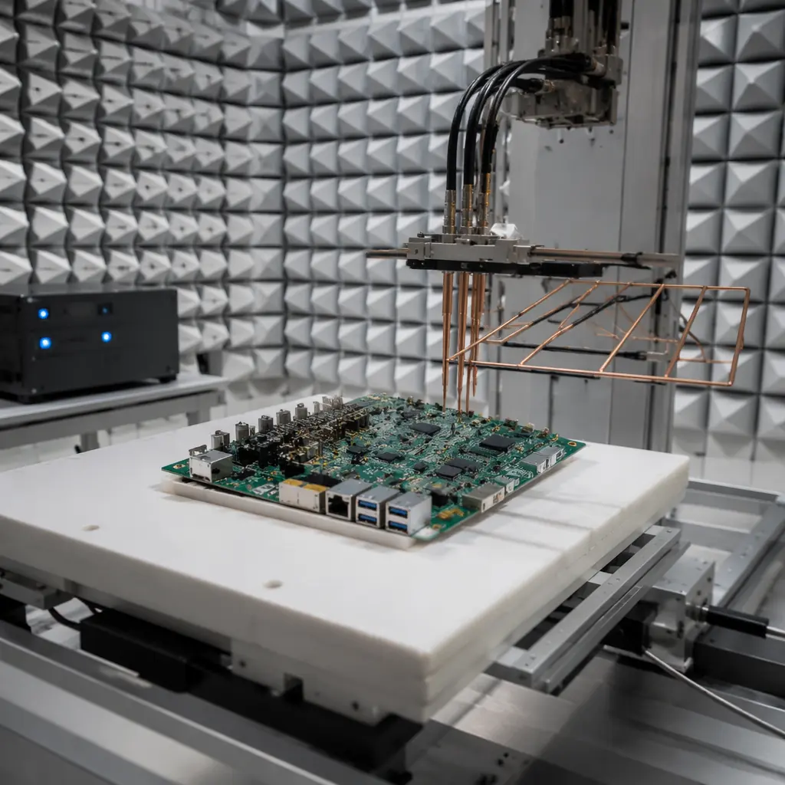
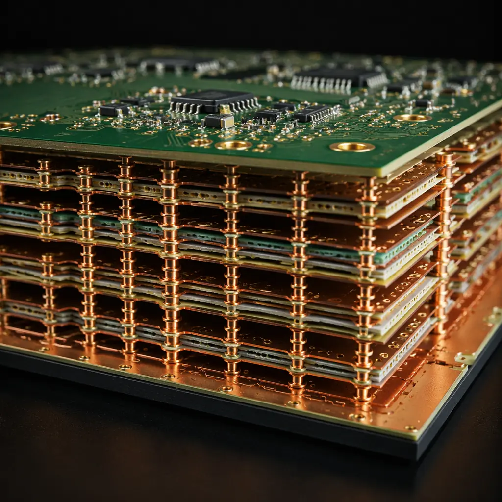
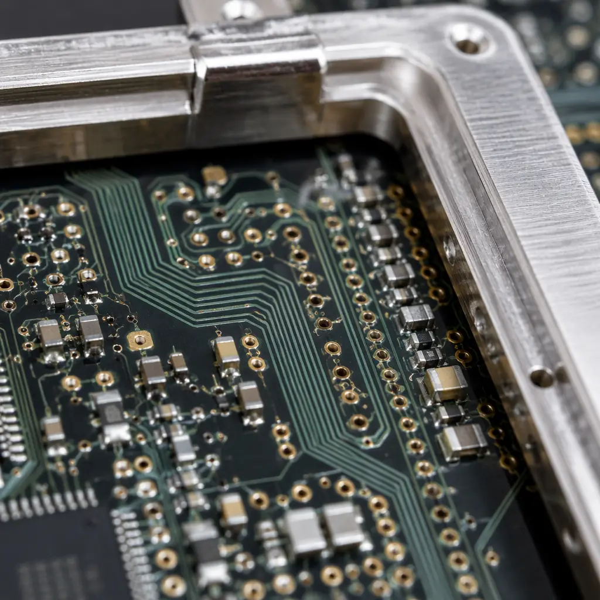

Every PCB buyer has received the email: "Your board failed radiated emissions at 480 MHz. We need a redesign." The cost isn't just the $15,000–$50,000 for another spin of the board. It's the 6–8 weeks of schedule slip, the missed product launch window, and the compliance lab re-booking fees that push the total impact well past six figures. What makes this particularly frustrating is that 60% of EMC failures are predictable from the PCB stackup and layout alone — they're design decisions, not test surprises. At Huaxing PCBA, we manufacture over 120,000 PCB panels per month across industries where EMC compliance is non-negotiable: automotive electronics facing CISPR 25, medical devices requiring IEC 60601-1-2, industrial controls under IEC 61000-6-2, and consumer products that must pass FCC Part 15 before they reach Best Buy shelves.
This guide covers the five PCB design parameters that directly control electromagnetic compatibility — and exactly what to write in your fabrication notes so your CM doesn't make assumptions that cost you a compliance failure. Every data point comes from our production floor, where we see both the boards that pass on the first attempt and the ones that come back for re-spin.

Decision 1: Ground Plane Continuity — The Single Largest Lever on Radiated Emissions
If you fix only one thing in your PCB design for EMC, fix the ground plane. A continuous, unbroken ground reference plane below every signal layer is the most effective EMI suppression technique in PCB design — and the one most frequently compromised by cost-driven layer count reductions. Here's why it matters in numbers: a 2mm gap in the return path under a 100 MHz clock trace increases the loop area by roughly 40× compared to an uninterrupted plane. Since radiated field strength is proportional to loop area times frequency squared, that gap turns a compliant 30 dBµV/m emission into a failing 62 dBµV/m — far above the FCC Part 15 Class B limit of 40 dBµV/m at 3 meters.
Specify a Solid Ground Plane on Layer 2 — Not a Split or Hatched Plane
A 4-layer board with the stackup Signal–GND–PWR–Signal places the high-speed traces on layer 1 directly above an uninterrupted ground reference on layer 2. The return current flows directly beneath the signal trace, minimizing loop area. When cost pressure forces a 2-layer board, the return path must route around obstacles — vias, connectors, board edges — creating the loop area that radiates. If you must use 2 layers, specify a >80% copper fill on the bottom layer as ground pour (not a grid — grid patterns with >25% void area degrade return path impedance by 3–5×). At our facility, 4-layer boards with solid L2 ground show 8–12 dB lower radiated emissions in the 30 MHz–1 GHz range compared to equivalent 2-layer designs — that's the difference between passing and failing the FCC margin requirement.
Never Route a High-Speed Trace Across a Ground Plane Split
A ground plane split — whether intentional (separating analog and digital ground) or accidental (a connector footprint cutting through the plane) — forces the return current to find an alternate path. The return current flows around the slot, creating a slot antenna that radiates efficiently at the frequency where the slot length equals half a wavelength. A 25mm slot resonates at roughly 6 GHz — right in the Wi-Fi band and well within modern EMC test ranges (up to 6 GHz for FCC, up to 6 GHz for CISPR 32). The fix: stitch ground planes together with vias at <3mm spacing along the entire slot perimeter, or better, don't split the plane at all — use component placement and careful partitioning instead. For more on stackup decisions, see our PCB stackup design guide covering layer count, material selection, and impedance planning.
Fabrication Note — Ground Plane Specification: "Layer 2 shall be a solid, uninterrupted copper ground plane with minimum 85% copper coverage. No slots, splits, or voids exceeding 1mm in any dimension in regions below high-speed signal traces (clock, DDR, LVDS, USB 3.x, PCIe). Ground plane stitching vias to be placed at <2.5mm centers along all board edges and around all connector footprints."

Decision 2: Layer Stackup — Why 4 Layers Often Costs Less Than 2 After Compliance Testing
The procurement instinct is to minimize layer count to minimize board cost. But when a 2-layer board fails EMC and requires a 4-layer re-spin, the "savings" evaporate instantly. The cost difference between 2-layer and 4-layer FR-4 at prototype quantities (100–500 units) is approximately $1.50–$3.00 per board. The cost of one EMC re-test at an accredited lab: $2,500–$8,000 per day. The math is clear: if there's even a 20% probability of EMC failure with a 2-layer design, the expected cost of the 4-layer approach is lower — and that's before accounting for schedule delay.
| Stackup Configuration | EMC Performance | Relative Board Cost | Best For |
|---|---|---|---|
| 2-layer (SIG–GND/PWR) | Poor — no continuous return plane | 1× | DC/low-frequency, <10 MHz clocks |
| 4-layer (SIG–GND–PWR–SIG) | Good — one solid reference plane | 1.3–1.5× | Most digital boards, up to 500 MHz |
| 6-layer (SIG–GND–SIG–PWR–GND–SIG) | Excellent — two reference planes | 1.8–2.2× | DDR memory, high-speed digital |
| 8-layer (SIG–GND–SIG–GND–PWR–GND–SIG–GND) | Best — every signal layer adjacent to ground | 2.5–3.5× | RF, multi-GHz, mixed-signal |
The most cost-effective upgrade is from 2-layer to 4-layer with the SIG–GND–PWR–SIG arrangement. The solid ground plane on layer 2 provides a low-impedance return path for all layer 1 signals, while the power plane on layer 3 provides inter-plane capacitance — roughly 200–500 pF per square inch between the power and ground planes with standard 0.2mm prepreg — that acts as a free decoupling capacitor for frequencies above 100 MHz, where discrete capacitors become inductive. For high-speed digital designs with DDR4 or PCIe Gen 3+, a 6-layer SIG–GND–SIG–PWR–GND–SIG stackup provides dual ground reference planes that sandwich the high-speed routing layer, containing the electromagnetic field between the two ground planes — effectively a stripline configuration that radiates 15–20 dB less than an equivalent microstrip on the outer layer. Read our impedance control guide for the fabrication tolerances required when running controlled-impedance traces in stripline configuration.
Decision 3: Trace Routing Rules That Prevent Common-Mode Radiation
Differential signaling solves many EMC problems, but it creates one of its own: common-mode conversion. When a differential pair is routed with length mismatch, impedance discontinuities, or asymmetrical via transitions, the perfectly balanced differential signal develops a common-mode component — and a common-mode current on a cable or long trace becomes a highly efficient antenna. Here are the routing rules that prevent this, with specific numbers from production experience.
Differential Pair Length Matching: Within 5 mil for USB 3.x, 10 mil for LVDS
Intra-pair length mismatch creates a phase delay between the positive and negative signals. At 5 Gbps (USB 3.2 Gen 1), one UI (unit interval) is 200 ps, and the signal travels roughly 30 mm in that time on FR-4. A 5-mil (0.127 mm) mismatch creates a 0.85 ps skew — negligible. But a 50-mil (1.27 mm) mismatch creates 8.5 ps of skew, which is 4.25% of a UI and generates measurable common-mode energy at the fundamental frequency. The rule we enforce in fabrication: differential pairs carrying signals above 1 Gbps must be matched within 5 mil (0.127 mm). For signals below 1 Gbps (LVDS, CAN, RS-485), 10 mil (0.254 mm) is sufficient. Length tuning — the serpentine meanders added to equalize lengths — must be placed as close to the mismatch source as possible, not at some arbitrary point along the trace.
Via Transitions: Minimize Stub Length, Never Route Through Unused Via Pads
When a high-speed signal transitions from an outer layer to an inner layer through a via, the portion of the via barrel below the signal layer — the via stub — acts as an open-circuited quarter-wave resonator. At the frequency where the stub length equals λ/4, it presents a short circuit to ground, creating a deep notch in the insertion loss and radiating the energy that should have gone to the receiver. For a 1.6mm thick board, a full-length via stub is roughly 1.0–1.2 mm, which resonates at approximately 35–40 GHz on FR-4 — above most current EMC test ranges. But for boards thicker than 2.0 mm or with signals above 20 Gbps, via stub resonance falls into the 20–30 GHz range, where it can cause EMC failures. The solution: back-drill unused via stubs to within 0.15 mm of the signal layer, leaving a residual stub that resonates above 60 GHz — safely outside any EMC test range. At our facility, back-drilling adds roughly $0.80–$1.50 per board at volume but prevents the $15,000 compliance re-test. For an introduction to via types and their EMC implications, start with our PCB via technology guide.
Guard Traces and Ground Stitching: When 3W Spacing Isn't Enough
The classic "3W rule" — spacing parallel traces at 3× the trace width — reduces crosstalk by roughly 70% compared to 1W spacing. But in mixed-signal designs where a 10 MHz clock trace runs parallel to a sensitive analog input, even 70% reduction isn't sufficient — the remaining coupled energy can still create a 2–5 mV noise floor on a 12-bit ADC input. The next level of isolation is a guard trace: a grounded copper trace routed between the aggressor and victim, stitched to the ground plane with vias at <λ/20 intervals. At 500 MHz (λ ≈ 300 mm), that means vias every 15 mm — practical for most board layouts. A properly implemented guard trace provides an additional 10–15 dB of isolation beyond the 3W spacing alone. For RF boards operating above 1 GHz, see our RF PCB design and manufacturing guide for the specialized materials and routing techniques that maintain signal integrity at microwave frequencies.

Decision 4: Connector Placement and Cable Exit Strategy — The Antenna You Didn't Design
Every cable attached to your PCB is an antenna. The length of that antenna, the impedance of the driver feeding it, and the presence (or absence) of common-mode filtering at the connector all determine whether it radiates enough to fail EMC. The most common failure mode: a high-speed digital signal couples common-mode energy onto the ground plane, which travels to the I/O connector, where the attached cable — a convenient quarter-wave monopole — radiates it into the test chamber. The fix is structural, not a last-minute ferrite bead.
Partition the Board: Noisy Digital Circuits on One Side, Quiet I/O on the Other
The simplest EMC strategy is physical separation. Place all clock generators, DDR memory, high-speed processors, and switching regulators on one side of the board — the "noisy" zone. Place I/O connectors, filtering components, and ESD protection on the opposite side — the "quiet" zone. The ground plane between them should be continuous, but signal traces from the noisy zone should not cross into the quiet zone without common-mode filtering. At Huaxing PCBA, we specify this as a fabrication constraint: the board outline drawing marks a 5–10 mm "moat" zone between digital and I/O regions where only filtered signals may cross — and every crossing trace gets a series ferrite bead or common-mode choke at the boundary. This single design rule eliminates roughly 40–50% of the common-mode radiation paths that cause EMC failures at the connector.
Common-Mode Chokes at Every Cable Connector
A common-mode choke presents high impedance to common-mode currents (the ones that radiate) while presenting near-zero impedance to differential-mode currents (the ones that carry your signal). A properly selected choke — rated for the signal bandwidth and current — provides 20–40 dB of common-mode attenuation at the target frequency. For USB 2.0 (480 Mbps), a choke with 90 Ω common-mode impedance at 100 MHz is standard. For CAN bus (1 Mbps), the requirement is much more relaxed — a 51 µH common-mode inductor suffices. The key specification: the choke's self-resonant frequency must be well above your highest clock harmonic that falls within the EMC test range. Place the choke within 5 mm of the connector pin — every millimeter of PCB trace between the choke and the connector is an antenna that bypasses the filtering. For industrial applications where cable runs exceed 3 meters, our industrial control PCB guide covers the additional surge and transient protection requirements for IEC 61000-4 compliance.
Decision 5: Board-Level Shielding — When Layout Alone Isn't Enough
In an ideal world, every PCB would pass EMC with good layout alone. In the real world, especially at frequencies above 1 GHz where even a 5 mm trace segment becomes an efficient radiator, board-level shielding is often the only practical solution. The decision tree is simple: if your board has an RF section operating above 1 GHz, a switching power supply running above 500 kHz, or a processor with clock speeds above 200 MHz, budget for shielding in your mechanical design from day one — not as a retrofit when the pre-compliance scan shows failures.
Metal Shield Cans: The 20 dB Solution for Under $0.50
A properly designed two-piece metal shield can (frame soldered to the PCB ground plane + removable lid) provides 15–25 dB of radiated emission reduction from 30 MHz to 6 GHz. The can must make continuous electrical contact with the ground plane around its entire perimeter — a gap of just 2 mm in the solder connection creates a slot antenna that radiates the very energy the shield is supposed to contain. At our facility, we specify shield can ground pads with 1.5 mm pitch along the entire footprint perimeter, stitched to the internal ground plane with vias at every pad. The can itself is typically 0.2–0.3 mm tin-plated steel — brass or copper versions provide marginally better shielding but at 2–3× the cost with no measurable difference below 6 GHz. For boards inside aluminum enclosures, the enclosure provides the primary shielding and the on-board can serves as secondary containment for sensitive RF sections. This is standard practice in our telecom and 5G PCB manufacturing where multiple RF chains operate simultaneously on a single board.
Absorber Materials: When Shielding Reflects the Problem Instead of Solving It
Inside a sealed metal can, electromagnetic energy doesn't disappear — it bounces between the can walls and the PCB surface. In a 20 × 20 × 5 mm can, the first cavity resonance occurs at roughly 7.5 GHz (assuming FR-4 dielectric loading). At that frequency, the can becomes a resonant cavity that amplifies rather than suppresses emissions. The fix: apply a thin (0.5–1.0 mm) microwave absorber sheet to the inside of the can lid. These materials — typically a magnetically loaded silicone or urethane — convert RF energy to heat through magnetic loss. A 1 mm sheet of commercial absorber (e.g., Laird Eccosorb MCS) provides 5–10 dB of attenuation from 1–18 GHz when placed at the cavity's E-field maximum, which occurs at the center of the lid for the fundamental mode. The cost is modest: roughly $0.15–0.30 per can at production volumes. For aerospace applications where shielding requirements are driven by MIL-STD-461 rather than FCC, our aerospace and defense PCB guide covers the additional qualification requirements including thermal vacuum and radiation hardness.
EMC Compliance Checklist — Before You Send Gerbers to Fab:
□ Continuous ground plane on layer 2 (≥85% copper fill, no splits under high-speed traces)
□ 4-layer minimum for any design with clock >20 MHz or DDR memory
□ Differential pairs length-matched within 5 mil (>1 Gbps) or 10 mil (<1 Gbps)
□ I/O connectors physically separated from high-speed digital circuits (≥5 mm moat)
□ Common-mode choke or ferrite bead within 5 mm of every off-board connector
□ Shield can ground pads on 1.5 mm pitch, stitched to internal ground with vias at every pad
□ No unused via stubs longer than 0.5 mm in signal paths above 5 Gbps
Pre-Compliance Testing: The $2,000 Insurance Policy Against a $50,000 Failure
Full-compliance EMC testing at an accredited lab costs $2,500–$8,000 per day and must be booked 2–4 weeks in advance. Pre-compliance testing — a simplified scan using near-field probes and a spectrum analyzer — identifies the top 80% of emission problems in a single afternoon for the cost of the equipment rental. A basic pre-compliance setup: a $1,500 spectrum analyzer (Rigol DSA815 or equivalent, 9 kHz–1.5 GHz), a set of $200 near-field H-field and E-field probes, and a $300 LISN (Line Impedance Stabilization Network) for conducted emissions. Total investment: ~$2,000. Return: catching the 60% of EMC failures that are fixable at the PCB level before you spend $8,000 on a formal compliance test that you fail.
The pre-compliance scan procedure is straightforward: power up the board in its intended operating mode, scan each IC and connector with the near-field probe at 2–3 mm distance, and record the frequency and amplitude of any emission peaks above the limit line. Common offenders — clock harmonics at 3×, 5×, and 7× the fundamental, switching regulator noise at 50–300 MHz, and DDR memory bus emissions at 800 MHz–2.4 GHz — appear as distinct peaks on the spectrum analyzer that map directly to specific components. Fix the top 3–5 peaks and you've typically eliminated 80% of your EMC risk. For a complete overview of PCB quality verification, our PCB testing methods guide covers AOI, X-ray, flying probe, and functional test methodologies.